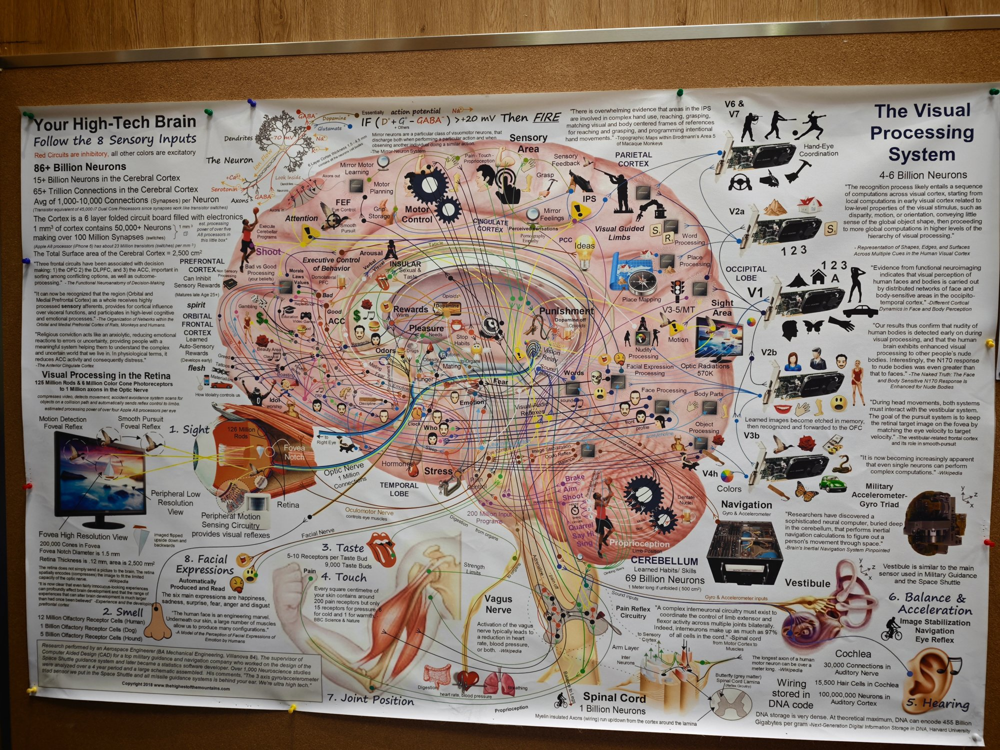

跟随 8 种感官输入，走进一台由 860 亿个神经元组成、用生物电路运行的超级计算机。红色回路 = 抑制；其余所有颜色 = 兴奋。
海报原图就是本站的导航起点。点击图上的编号热点，或下方图例，即可跳转到对应章节并展开细节。每一段内容也都标注了它在海报中的位置。

海报把大脑直接比作一台装满电子元件的折叠电路板。把它和最先进的芯片放在一起，尺度令人难以置信。
树突把来自其他神经元的信号汇集到胞体，静息电位约 −70 mV。当兴奋信号超过抑制信号、使膜电位越过阈值，神经元就“点火”放电，沿轴突发出动作电位。
调整兴奋性输入（D⁺ + G⁺）与抑制性输入（GABA⁻）的强度。膜电位 = 静息 −70 mV + 兴奋 − 抑制；当总电位越过 −50 mV 阈值，神经元触发动作电位。
海报把大脑侧面画成一张密集布线图：每个脑区都是一块芯片，彩色线路是神经回路。点击图中区域或按钮，查看该区的功能、海报上的全部标注与引用的研究原文。
海报把视觉通路的每一级画成一张显卡：视网膜送来的信号先在早期视觉皮层做局部计算（视差、运动、朝向），再逐级向上整合，从线段走向形状、面孔、物体、颜色，最终到手眼协调。
点击每张卡片，跟随该感官的线路一路追踪到脑区；详情中可一键回到海报定位。海报标注的每一个数字都在这里。
大脑核心的奖赏–快乐–惩罚回路决定“想要什么、享受什么、逃避什么”。海报在这里用大量表情、符号与网络节点，标出了欲望、信任、恐惧与情绪的走向。
大脑之外，脑干与脊髓构成了身体的实时总线：小脑负责惯性导航与熟练动作，脊髓负责毫秒级反射，迷走神经掌管内脏与平静。
以下为海报引用的研究原文（英文）与中文译意。